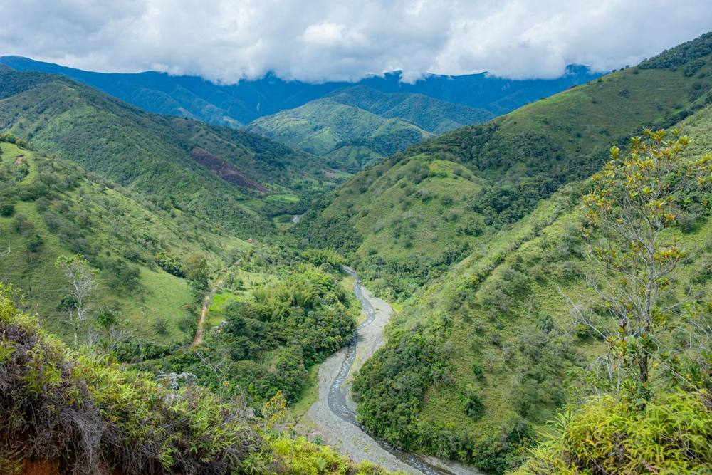
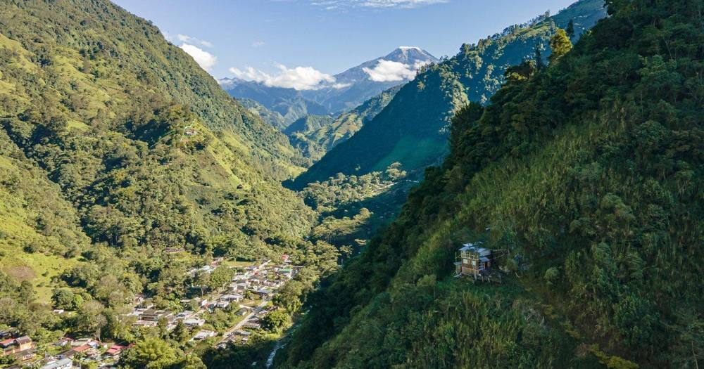
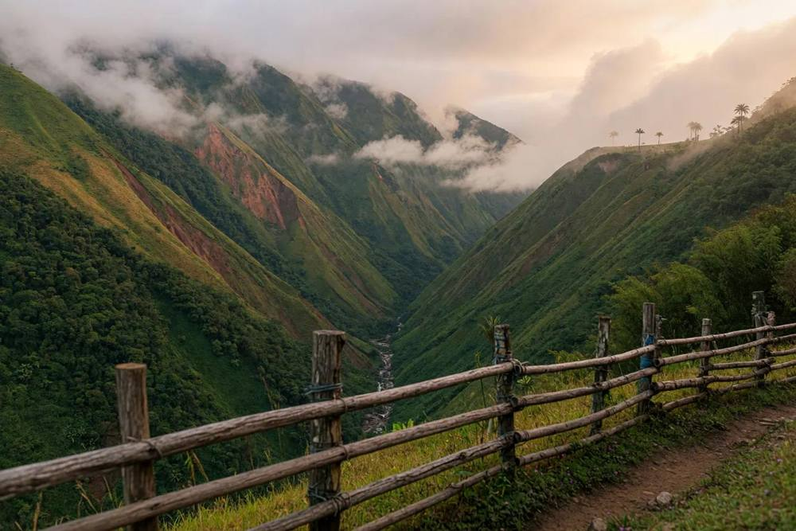
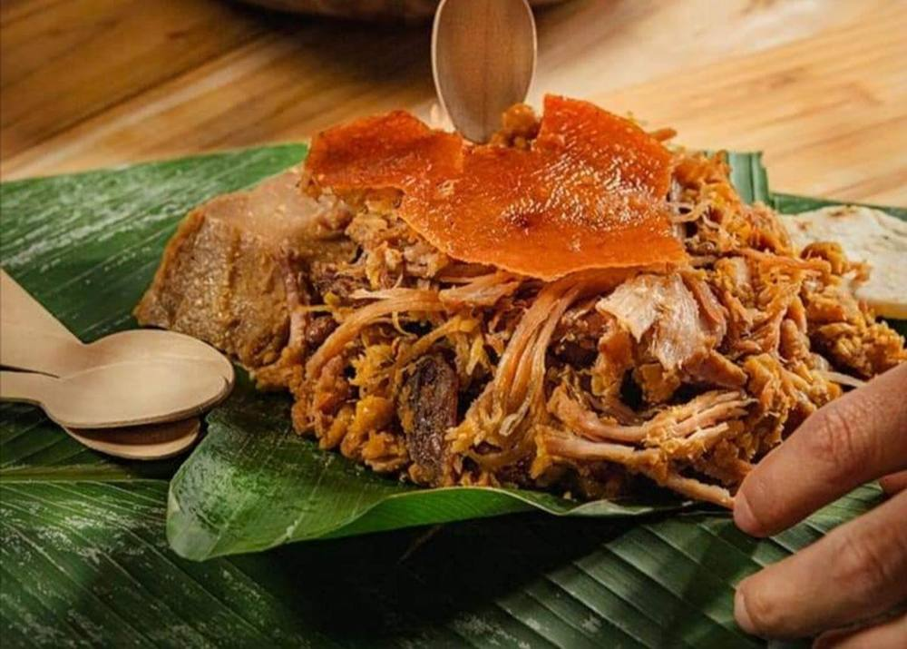

Cañón del Combeima
Naturaleza, montañas, cascadas y actividades ecoturísticas cerca de Ibagué.
Las Riquezas del Tolima
Bienvenidos a Las Riquezas del Tolima, un espacio para descubrir los paisajes, la cultura, la gastronomía y las tradiciones del departamento. Descubre la magia de nuestra tierra.
Destinos turísticos
Montañas, cascadas, páramos y senderos para vivir el Tolima con respeto por su entorno.

Naturaleza, montañas, cascadas y actividades ecoturísticas cerca de Ibagué.

Ecosistemas de alta montaña y paisajes andinos de gran valor ambiental.

Paisajes de montaña y experiencias relacionadas con la vida local.
Cultura y tradición
El Tolima es una tierra de música, danza, folclor y celebraciones tradicionales. Ibagué se destaca por su identidad musical y por las actividades culturales que reúnen a propios y visitantes. Conocer estas expresiones es valorar nuestra historia y nuestras raíces.
Gastronomía
El tamal tolimense y la lechona son preparaciones tradicionales reconocidas por su sabor y por su relación con las costumbres familiares y regionales.

Misión y visión
Promover el conocimiento y la valoración de los atractivos turísticos del Tolima mediante una página web accesible y atractiva que comparta información sobre naturaleza, cultura, gastronomía y destinos del departamento.
Ser una página web de referencia para quienes desean descubrir el Tolima, destacándose por presentar información turística de forma sencilla y fomentar el respeto por la cultura local y el cuidado del medio ambiente.
Producto principal
Un itinerario digital ajustado a tus intereses, duración y presupuesto. Elige y mira tu propuesta.
Intereses
Duración
Presupuesto aproximado
Información general de destinos y recomendaciones.
Propuesta según intereses, duración y presupuesto.
Acompañamiento en tiempo y presupuesto.
Precios hipotéticos por validar, no son tarifas confirmadas. No incluye transporte, entradas, alojamiento, seguros ni guianza.
Proyecto académico · Fundamentos de Mercadeo
Iniciativa académica, no una empresa constituida: un servicio digital de orientación y diseño de experiencias turísticas en el Tolima, con enfoque responsable.
Supuesto académico; no es demanda real ni proyección oficial.
Expectativa: imágenes autorizadas y pregunta sobre destinos preferidos.
Presentación del servicio y ejemplo de itinerario.
Ruta temática de ejemplo e invitación a la encuesta.
Guía básica, consultas y evaluación con ventas reales.
Piezas: afiche digital, carrusel “3 ideas para descubrir el Tolima”, video corto, historia interactiva y publicación de turismo responsable. Métricas: alcance, visitas, clics, formularios, consultas, ventas y satisfacción.
Turismo responsable
Respeta la naturaleza, no dejes residuos, cuida los senderos y sigue las indicaciones de los responsables de cada destino.
Datos ilustrativos para fines académicos.